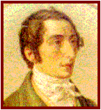

Carl Maria von WEBER

|
Nace: 18-noviembre-1786 en Eutin (Alemania). |
Muere: 5-junio-1826 en Londres. |
||
|
 |
Procedía de una familia muy
musical, su padre era músico municipal y había sido maestro de capilla de obispo
de Lübeck; su madre era cantante; y tuvo varios hermanastros que también
fueron músicos. En 1787 su padre crea la Compañía Teatral Weber e inició con
su familia una serie de giras donde Weber fue creciendo. Sus primeras clases
de música las recibió de su hermanastro Fridolin. En 1796, aprovechando una
parada de la Compañía en Hildburghausen, pues su madre estaba enferma, recibe
clases de Johann Heuschkel. Al año siguiente la Compañía se traslada a
Salzburgo, donde recibirá clases de Michael Haydn (hermano de Joseph). En
1798 muere su madre y se trasladan a Munich. En 1800 llega con su padre a
Friburgo donde recibe el primer encargo: la ópera “Das Waldmädchen” (La
muchacha del bosque). En 1801 regresa a salzburgo para reanudar sus clases.
Posteriormente viaja a Viena donde se hizo popular y estudió con Vogler,
quien le despertó su interés por el folclore alemán y le procuró su primer cargo como director musical del
Teatro de Breslau, Silesia. En 1806 es secretario del duque de Eugen en
Carlsruhe y luego del duque Ludwin en Stuttgart. En 1810 su padre le ocasiona
problemas financieros y tiene que abandonar la ciudad. Recorren Alemania
durante tres años y sin dinero. En 1813 es nombrado director de la Ópera de
Praga. En 1816 director de la Ópera de Dresde. En 1823 visita Viena y conoce
a Beethoven. Ya en esta época se agrava su tuberculosis. En 1826 antes de
morir estrena en Londres “Oberon” con una calurosa acogida. |
Obras principales: Óperas: -Das Waldmädchen. -Peter Schmoll und seine
Nachban. -Silvana:
Obertura. -Abu
Hassan. -Der
Freischütz. -Die
drei Pintos. -Euryanthe. -Oberon:
Obertura. Orquestales: -Sinfonía
Nº 1 en Do. -Gran
popurri para violonchelo y orquesta. -Concierto
para piano Nº 1 en Do. -Concierto
para clarinete Nº 1 en Fa menor. -Concierto
para clarinete Nº 2 en Mi bemol Op. 26. (Allegro) -Concierto
para fagot en Fa.(1º Mov.) -Concierto
para piano Nº 2 en Mi bemol. -Concierto
para trompa. -Andante
e Rondo Ungarese para viola. Música de cámara: -Cuarteto
con piano en Si bemol. -Quinteto
con clarinete en Si bemol. (Allegro) -Duetos
para violín y piano “De mi patria”. -Cuartetos
para cuerda Nº 2 en Re menor. -Gran
dúo concertante para clarinete y piano. Lieder: -Die Kerze. -Wiedersehen. -Sehnsucht. Música religiosa: -Misa
en Mi bemol (Grosse Jugendmesse). -Missa Sancta Nº 2 (Jubelmesse). -Jubel-Kantate. |
|
|
Podemos encuadrar a
este autor dentro del ROMANTICISMO
|
|||